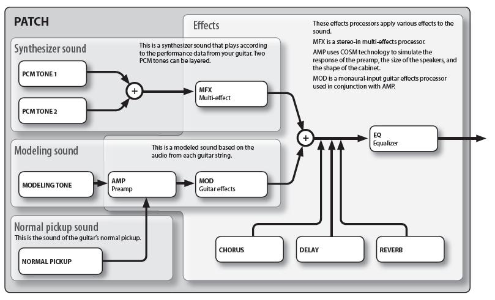
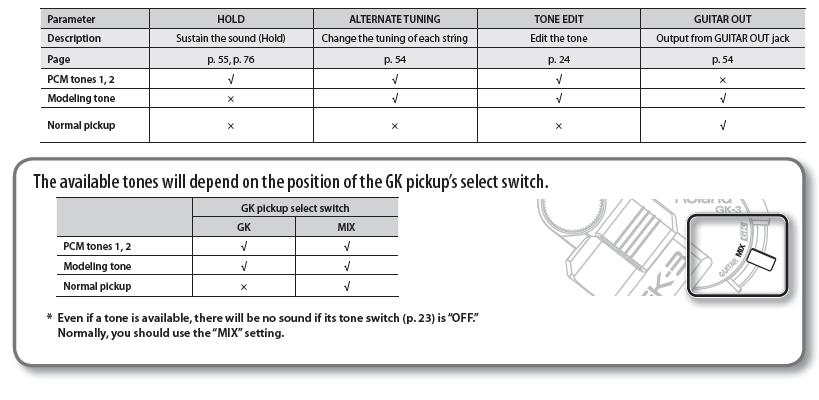

IndexWhat is a Patch?
A
“patch” is a unit of sound on the KATANA. In addition to settings
determining the type of sound, a patch also contains effect settings. You
can modify (edit) the settings of a patch, and save it as a “user
patch.” (The factory supplied patches already built into the KATANA are called “preset
patches.”)
Each
patch contains all of the settings for the PCM 1 and 2 synthesizers,
for the COSM Modeling instruments, for the Normal Pickup settings, and
for all of the effects for that memory location in the KATANA.
The KATANA stores hundreds of such patches, where you can assign each a number and a name, like USER : 20-2 : RnB Section. The following illustration from the owner's manual shows what kind of information is stored in each patch.

The
following screenshot from the KATANA FloorBoard Editor shows the patch
structure similarly in the blue area, with modules for the sound sources and the
effects. The modules use lighted buttons to indicate ON/OFF,
potentiometer-like knobs, and pull-down menu fields for selecting sound
sources and setting effects module
parameters.
In
the Patch Tree, the black area at the left in the screenshot below, you
can see a list of the patches from my KATANA, sorted by bank numbers and
then patches within the banks, corresponding to the Bank and Patch
numbers in my KATANA. The KATANA FloorBoard Editor provides several tools
to help you view your patches is several useful ways. Look at the menu
bar item Tools > Patch Text Summary, System Global Text Summary, and KATANA Patch List Summary
to explore these tools. One of the nice features of the KATANA
FloorBoard Editor is that you can click on any patch in the Patch Tree
panel to instantly audition it in the KATANA.
There are four sound sources available in the KATANA which
can be used individually or in any combination. The sound sources are listed below
and shown on the left side in the above and following images and are referred to in the Owner's Manual as 'tones':
- PCM SYNTH 1
- PCM SYNTH 2
- COSM MODELING
- NORMAL PICKUPS
Modules and Effects Routing
I'll explain elsewhere how
each of the tone and effects modules works. Here it is important to note that you can
enable a tone (sound source) or an effects module by clicking on the
Enable/Disable switches (rectangular buttons), which will light when enabled (as DELAY
above) and be gray when disabled (as MFX above). You can also reroute
the AMP(lifier), NS(noise suppression), and MOD(ulation) effects to
come before or after the MFX(multi-effects) by clicking the STRUCTURE
1/2 buttons, where STRUCTURE 1 routes them after and STRUCTURE 2 routes
the before. You can also bypass the MFX module and the AMP-NS-MOD modules entirely.
Tone Restrictions and Selection using the GK Pickup Switch
The
Roland owner's manual calls the sounds generated by the PCM
synthesizers, the modeler, and the normal pickup(s) 'tones'. There
are some restrictions on the functions that can be used with each tone
and with the normal pickup; please refer to the following information
from the owner's manual. For additional details, refer to the indicated owner's manual pages.
